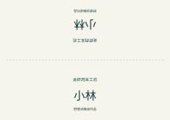
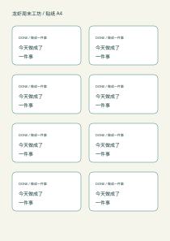
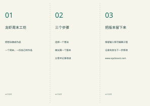

一份活动输入，生成桌牌、贴纸和折页。下载SVG继续编辑，或用三页PDF按实际大小打印。
下载三页PDF · 改活动输入 · 生成脚本 · 纸样检查表

SVG · 210 × 148 mm
SVG · 每枚85 × 48 mm
SVG · 297 × 210 mm先按“实际大小／100%”打印，量出纸张和折线，再决定是否批量制作。PDF已嵌入随包的Noto Sans SC字体子集与OFL许可。换新姓名或文字时若提示缺字，请用已授权完整中文TTF重新生成。